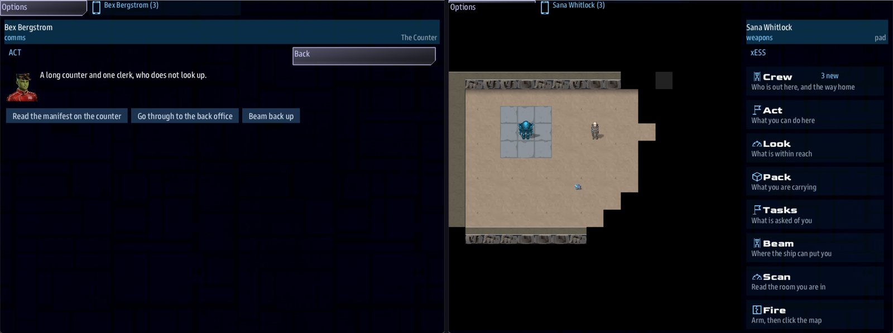

Class 5, Lecture 10 - A boarding site on the map¶
What you will have at the end¶
Two places in The Kestrel Verge that the crew leaves the ship for.
The first is the Customs House. The ship docks, a clerk calls, and a party goes aboard into rooms you wrote: a counter, a manifest, a back office. They choose where to go and what to read. One thing they read finishes a step of your story.
The second is Tally Yard, and the party walks it. It is a map, with a door that wants a keycard, a terminal, a tired man on a crate, and a loader that has stopped knowing its friends. What the party finds behind the door finishes the next step.
Both places remember. Dock again, come back from another system, or close the game and continue next week: the door is still open and the manifest is still read.

The Customs House counter with its choices, and the yard's map on a handheld.You add one line to a landmark, twice. Everything else is the place itself, in files of its own.
The video¶
About 6 minutes. Subtitles are available in the player.
Before you start¶
- Your
MyUniversemission as Lecture 9 left it. Its six.amdfiles matchc5-09-organizing-a-big-universe\example\. sbs lint MyUniversesayscleanfor all six files.- The game closed, and the save deleted:
C:\Cosmos\data\missions\common_data\saves\universe_save_the_kestrel_verge_1.yaml. - Open
story.jsonin the mission folder and look for a line with the wordboardingin it. A folder made with today'ssbs createhas one. If yours does not, "If something goes wrong" has the line to add. Without it, nobody can go ashore.
Lecture 11 was written before this one. If you took it first, your universe has The Hollow in it. Everything on this page works the same; "What changes in later lectures" gives the numbers you will see.
About the two kinds of place. Writing a place of rooms is Class 3, Lectures 1 to 3. Writing a place with a map is Class 3, Lectures 7 to 12, and it uses a map editor this page does not. This lecture is about hanging such a place on a landmark in a universe. So Part 1 teaches you a small place of rooms line by line, because it is short. Part 2 hands you a small finished map and the file that goes with it, ready to paste, and teaches the join. If you have taken Class 3, bring your own. If you have not, paste these, and take Class 3 when you want a bigger one.
Words for this lecture:
| Word | Meaning |
|---|---|
| Site | A place the crew leaves the ship for. A landmark names it with one line |
| Text site | A site made of rooms and choices. No map |
| Walked site | A site with a map. The party walks it, cell by cell |
| Party | The crew members who went. They go as themselves |
| Call | What the site says to the ship when it docks. The files call it a hail |
| Area | One map. Its file ends in .tiles |
| Art pack | A download of pictures a map is drawn with. Missions share them |
Part 1 - A place of rooms¶
Step 1 - The landmark gets one line¶
Open kestrel_verge.amd. Under your last landmark, The Bone Pile, with an empty line
above it, add:
### [Customs House](customs_house)
---
At: 0, 0
Prefab: station
Art: starbase_civil
Site: customs
---
A customs post beside the relay. It waves everybody through.
It is a station like any other, from Lecture 5, with one new line.
| Line | What it means |
|---|---|
At: 0, 0 |
The home system, beside Kestrel Relay. The crew starts here, so there is nowhere to fly |
Site: customs |
The crew can leave the ship for this place. The word is the site's key. The game reads the place from a file named for it: customs.amd, in the mission folder |
It has no Side: line, so it is the crew's own station and they can dock with it.
Step 2 - The site's file¶
In VS Code, with MyUniverse open: File, New File..., type customs.amd and press
Enter. Type or paste all of this into it, and save.
// Customs House: a place the crew leaves the ship for. This file is the whole site:
// the call that comes when the ship docks, and the rooms the party walks through.
// The landmark in kestrel_verge.amd says `Site: customs`, and that is this file's name.
# [Customs House](customs)
## [Voices](voices)
### [The Clerk](customs_clerk)
---
Face: terran_female
Roles: narrator
Color: "#8df"
---
Stamps what is put in front of her.
## [Hails](hails)
### [Customs Answers](customs_call)
---
Speaker: customs_clerk
Title: Customs House
Color: "#8df"
---
% Customs. Nothing to declare? Then come aboard and look around, if you must.
- [Assemble a boarding party]() ; signal boarding_down
- [Stay aboard]()
## [Scenes](boarding)
### [The Counter](customs_counter)
---
Speaker: customs_clerk
---
%{learned the manifest < 1} A long counter and one clerk, who does not look up.
%{learned the manifest} The clerk has turned the manifest face down. She still does not look up.
- [Read the manifest on the counter](customs_manifest) ; learn the manifest, signal manifest_read
- [Go through to the back office](customs_office)
- [Beam back up]()
### [The Manifest](customs_manifest)
---
Speaker: customs_clerk
---
% Forty crates declared for Tally Yard. Every line is initialed, and every time it is the same letter.
- [Back to the counter](customs_counter)
- [Beam back up]()
### [The Back Office](customs_office)
---
Speaker: customs_clerk
---
% Shelves of stamped forms, and a kettle that has boiled dry.
- [Ask whose initial is on the manifest](customs_initial) if learned the manifest
- [Back to the counter](customs_counter)
- [Beam back up]()
### [The Initial](customs_initial)
---
Speaker: customs_clerk
---
% "K. That is Kell, who keeps the yard. He signs for everything, and nobody checks him."
- [Back to the counter](customs_counter)
- [Beam back up]()
This is the main-file shape: a title with one hash, chapters with two, records with
three. It is a file of its own, and no File: line anywhere names it. The landmark's
Site: line is what finds it.
The three chapters
| Chapter | Its key | What it is |
|---|---|---|
## [Voices](voices) |
voices |
Who is speaking: a name, a face, a color. The hail and the rooms name the clerk with Speaker: |
## [Hails](hails) |
hails |
The call that comes when the ship docks |
## [Scenes](boarding) |
boarding |
The rooms. The key is boarding, not scenes. That one word is a mistake waiting in Step 4 |
The call. It is a conversation like the ones in Lecture 7, with one answer that matters:
boarding_down is the game's own word. The answer that carries it sends a party. Write
any words you like in the brackets. An answer without it only ends the call.
The rooms. Four rules, and the file above follows all four.
| Rule | In the file |
|---|---|
| The first room in the chapter is where the party arrives | The Counter |
| An answer with a key in its round brackets goes to that room | (customs_office) |
| Every room has a way back | - [Back to the counter](customs_counter) |
| Every room has a way home. An answer with empty round brackets ends the visit | - [Beam back up]() |
A fact. Three lines work together.
| Line | What it does |
|---|---|
; learn the manifest on an answer |
The party now knows a fact called the manifest. The words are yours |
if learned the manifest after an answer |
That answer is offered only to a party that knows it |
%{learned the manifest} at the start of a line |
That line is spoken only then. %{learned the manifest < 1} is the opposite: spoken only before |
A fact belongs to the place it was learned in. The Customs House keeps its own, and keeps them.
Two things on one answer. The manifest's answer does two things, with a comma
between them: ; learn the manifest, signal manifest_read. The second is for your
story, in the next step.
Step 3 - A step of story the site finishes¶
In kestrel_verge.amd, in the Narrative chapter, under your last record and above the
heading ## [Goals](goals), add:
### [Nothing to Declare](lead_customs)
---
Scope: shared
Starts when: at once
Done when: signal manifest_read
Reward: 50 credits
---
 The Customs House, beside Kestrel Relay
The Customs House beside the relay waves everybody through. Dock with it, go aboard, and read what it has been waving through.
A post that checks nothing is a post somebody is paying. Find out who.
A lead, as in Lecture 7. It is done when the signal manifest_read is sent, and the
answer you wrote in Step 2 sends it. That is the whole join between a site and your
story: an answer in the site says ; signal and a word, and a step in the Narrative
says Done when: signal and the same word.
The first line of its briefing draws the Customs House beside the words, as the Assay
Office was drawn in Lecture 6. starbase_civil is the model the landmark's Art: line
names, so the crew sees the station they are being sent to.
Step 4 - Check it¶
== customs.amd ==
clean
== dialogue\deepwell.amd ==
clean
== dialogue\gleaners.amd ==
clean
== dialogue\hollin.amd ==
clean
== jobs.amd ==
clean
== kestrel_verge.amd ==
clean
== lore.amd ==
clean
7 amd + 1 mast file(s): 0 error(s), 0 warning(s)
Seven files, and every one is clean.
Lint reads the site's file with the rest of the mission. It knows boarding_down is the
game's own word. And it sees that the answer in customs.amd sends manifest_read and
the step in kestrel_verge.amd waits for it, as it did for ledger_read in Lecture 9.
For Part 1, your checkpoint is a
cleanlint for all seven files.
Misspell either word and lint tells you. The table of mistakes is in Step 11, for both kinds of site together.
Step 5 - Play it¶
Nobody has seen any of this on a screen. What follows is what the game did when a script reported the ship docked, opened the call and gave its answer by the game's own calls, seated one stand-in crew member, and pressed the choices the game offered. The words on the choices are yours.
| The crew does | What the game did | |
|---|---|---|
| 1 | Helm: opens the Quest Log | Four leads now. The new one is Nothing to Declare |
| 2 | Helm: docks with Customs House | A few seconds later the ship has a call waiting, titled Customs House |
| 3 | Comms: opens the call | The clerk's line, and two answers: Assemble a boarding party and Stay aboard |
| 4 | Comms: Assemble a boarding party | A party is open for a place called CUSTOMS HOUSE: the landmark's name |
| 5 | A crew member presses the handheld icon, opens Boarding Party and presses BEAM DOWN | They are in The Counter: "A long counter and one clerk, who does not look up." Three choices |
| 6 | Go through to the back office | The Back Office, with two choices. Ask whose initial is on the manifest is not offered |
| 7 | Back to the counter, then Read the manifest on the counter | The Manifest. Nothing to Declare is Done, and the crew has 550 credits, up from 500 |
| 8 | Back to the counter | The other line now: "The clerk has turned the manifest face down. She still does not look up." |
| 9 | Go through to the back office | Three choices this time. Ask whose initial is on the manifest is the first |
| 10 | Beam back up | The visit is over. Nobody is down |
| 11 | Helm: docks with Customs House again | The call comes again. The Counter opens on its second line: the place remembers the manifest was read. Reading it again pays nothing. The crew still has 550 credits |
Row 5 is what Class 3 teaches about going aboard. The stand-in was sent down by a test setting, not by the button.
Part 2 - The same idea, walked¶
Step 6 - One rule¶
A walked site is not a new kind of landmark. It is the same line, Site: and a key.
What makes it walked is that the mission folder holds a map with that key.
The landmark says
Site: tally_yard. The map's first line saysarea: tally_yard. The same key. Nothing else joins them.
Say it out loud once. There is no other field, on the landmark or in the site's file, that says "this one has a map".
A walked site needs five things. Steps 7 to 10 make them.
| It needs | Where | Step |
|---|---|---|
| The art packs a map is drawn with | Two lines in story.json, one line in settings.yaml, and one command |
7 |
| A file that says which ground can be walked on | ground\starter.tileset |
8 |
The map, whose first line is area: and the site's key |
ground\tally_yard.tiles |
8 |
| The site's file: what stands on the map, and what it says | tally_yard.amd |
9 |
A landmark with Site: and the same key |
kestrel_verge.amd |
10 |
Step 7 - The art packs¶
A map is drawn with pictures from two art packs that many missions share, named
frontier and station. Your universe does not ask for them yet.
Open story.json. Its last lines are:
Make them read:
"shared_media": [
"artemis-sbs.LegendaryMissions.media.v1.4.0.zip",
"artemis-sbs.Cosmos-Tiles.frontier.v0.4.2.zip",
"artemis-sbs.Cosmos-Tiles.station.v0.4.2.zip"
]
}
Three things to get exactly right. The line that was last now ends with a comma. The
first new line ends with a comma. The second new line does not. And do not change the
numbers: the art packs have version numbers of their own, and 0.4.2 is right.
Open settings.yaml. At the very end, on lines of their own, add:
Then download the packs, once, with the internet on:
That this command downloads what shared_media lists and unpacks the art was read from
the tool's own code for this page. The command was not run to write it. Class 3 Lecture
7 has the same three lines and the same command, for a mission that comes with them.
Step 8 - The map¶
In VS Code, make a folder in the mission: File, New Folder..., type ground and
press Enter. The game looks through the whole mission folder for these two kinds of
file, so the folder's name is a habit and not a rule.
In ground, make a file named starter.tileset and paste:
tileset: starter
title: Starter ground
kinds:
dust: walk see look=dirt
pad: walk see look=stone_tiles
floor: walk see look=floor_metal
rock: look=rock
wall: tall look=wall_metal
It names five kinds of ground. walk is ground a person can cross. look= is the
picture from the art packs.
In ground, make a file named tally_yard.tiles and paste:
area: tally_yard
title: Tally Yard
tileset: starter
entry: pad
legend:
.: dust
#: rock
=: pad
_: floor
W: wall
P: pad @pad
D: floor @yard_door
T: dust @yard_terminal
k: dust @yard_keeper
c: dust @yard_keycard
s: dust @yard_loader
L: floor @yard_ledger
---
########################
#......................#
#..===.......WWWWWWW...#
#..=P=..k....W_____W...#
#..===.......W__L__W...#
#............WWWDWWW...#
#......c.......T.......#
#..................s...#
#......................#
########################
Read it as a picture. Rock all round. A landing pad on the left, where the party
arrives: entry: pad. A walled tally house on the right with one door, D. Each
letter in the legend is a kind of ground, and a word after @ is a mark: a named
cell where something will stand. Every row is the same length. If you have the VS Code
add-on from Class 3, this file opens as a picture you can paint. You do not need it
today.
The first line is the one that matters to this lecture: area: tally_yard.
Step 9 - The site's file¶
Make a file in the mission folder named tally_yard.amd. Paste all of this into it,
and save.
// Tally Yard: a place the party WALKS. The landmark in kestrel_verge.amd says
// `Site: tally_yard`, and the map is the file in the ground folder whose first line says
// `area: tally_yard`. The same key. Nothing else joins them.
// Class 3, Lectures 7 to 12, teach every line of a file like this one.
# [Tally Yard](tally_yard)
## [Voices](voices)
### [Keeper Kell](yard_voice)
---
Face: terran_male
Roles: narrator
Color: "#fd8"
---
Keeps the count at Tally Yard.
## [Hails](hails)
### [Tally Yard Answers](yard_call)
---
Speaker: yard_voice
Title: Tally Yard
Color: "#fd8"
---
% Tally Yard. The count is short and the loader has stopped listening. Come down if you like.
- [Assemble a boarding party]() ; signal boarding_down
- [Stay aboard]()
## [Side Stories](side_stories)
### [Clear the Yard](yard_clear)
---
For: weapons
Starts when: at once
Objective: Put the loader out of action
Done when: signal hostile_down_yard_loader
Leads to: yard_loader
---
The loader does not know a friend from a thief any more.
## [Props](props)
### [Yard terminal](yard_terminal)
---
Area: tally_yard
Mark: yard_terminal
Sprite: prop:terminal
Scene: yard_terminal
Blocks: yes
Scan: Still drawing power. Its last entry is nine days old.
---
A weatherproof terminal beside the tally house door.
### [Tally house door](yard_door)
---
Area: tally_yard
Mark: yard_door
Sprite: prop:hatch
Open sprite: prop:doorframe
Blocks: yes
Opens with: key yard_key
Scan: Mag locked. The keycard reader beside it is live.
---
The only way into the tally house.
### [Yard keycard](yard_keycard)
---
Area: tally_yard
Mark: yard_keycard
Sprite: prop:keycard
Item: yard_key
---
A gray keycard on a lanyard, dropped where the loader walks.
### [The tally ledger](yard_ledger)
---
Area: tally_yard
Mark: yard_ledger
Sprite: prop:terminal
Scene: yard_ledger
Scan: A paper ledger. The last page is in a different hand.
---
The yard's count, kept by hand.
## [People](people)
### [Keeper Kell](yard_keeper)
---
Area: tally_yard
Mark: yard_keeper
Sprite: fig:junker_m
Face: male
Calm: yes
Talk scene: yard_keeper
Scan: One human. Tired, and not armed.
---
The man who keeps the count, sitting on an upturned crate.
## [Hostiles](hostiles)
### [Loader frame](yard_loader)
---
Area: tally_yard
Mark: yard_loader
Sprite: fig:robot_war
HP: 2
Damage: 1
Notice: 3
Stun: 10
Speed: 2
Patrol: 19 7; 21 7; 21 8; 19 8
Scan: A cargo frame, nine days without a recognition update.
---
A loader walking the same square it has walked for nine days.
## [Scenes](scenes)
### [The Yard Terminal](yard_terminal)
% One line on the screen, over and over: COUNT SHORT. SEE LEDGER.
- [Read the log](yard_terminal_log) ; learn the count is short
- [Step back]()
### [Nine Days](yard_terminal_log)
% Day one: forty crates in, thirty-eight counted. Day two: the loader stops answering. The entries stop.
- [Step back]()
### [Keeper Kell](yard_keeper)
% "Nine days. I kept counting and nobody came."
- [Ask how to get into the tally house](yard_keeper_key)
- [Leave him to it]()
### [The Keycard](yard_keeper_key)
% "Keycard. I dropped it in the yard the day the loader turned on me."
- [Thank him]()
### [The Ledger](yard_ledger)
%{learned the count is short} Two crates short, and the last page is not his writing.
%{learned the count is short < 1} Columns of figures. Without the terminal's count they mean nothing.
- [Close the ledger]() ; learn a second hand, signal count_settled
You do not need to follow every line. Read it for what is new beside the Customs House.
| Chapter | What is in it |
|---|---|
## [Hails](hails) |
The call, exactly as in Part 1, with the same ; signal boarding_down |
## [Props](props) |
Things on the map: a terminal, a door, a keycard, a ledger |
## [People](people) |
Somebody calm to talk to. Calm: yes is the whole difference |
## [Hostiles](hostiles) |
Somebody who attacks |
## [Scenes](scenes) |
The rooms. On a map there is no first room. A room opens when a crew member uses the thing or the person that names it, with Scene: or Talk scene: |
## [Side Stories](side_stories) |
A small quest for one member of the party |
Five things to see in it.
Area:andMark:. Every thing and every person says which map it is on and which mark it stands on.Area: tally_yard, the key again.Mark: yard_dooris the@yard_doorin the map's legend.- The door and its key. The door says
Opens with: key yard_key. The keycard saysItem: yard_key. Whoever picks up the card can open the door. - The chapter of rooms is keyed
sceneshere, andboardingin the text site. A walked site reads both. A text site reads onlyboarding. - The way home is not in this file. A crew member leaves a map with BEAM UP on the handheld. When the last of the party is back aboard, the visit is over.
- Every key starts with
yard_. The keys of things and people must be different across all the site files of a universe. Starting each one with the site's name is the easy way.
For: in a universe. The side story says For: weapons: it is handed to the crew
member who came down from the Weapons console. In a universe made from this template
the word after For: is the name of a console: weapons, helm and comms were
tried. Class 3 also writes a job there, such as security, or a crew member's name.
Those need a crew roster, and a universe made from this template has none. Step 11 has
what happens with each.
Step 10 - The landmark, and the next step of story¶
In kestrel_verge.amd, under the Customs House landmark, add:
### [Tally Yard](tally_yard_station)
---
At: 0, 0
Prefab: station
Art: starbase_industry
Site: tally_yard
---
A counting yard on the edge of the lane. The count is short.
The landmark's own key is tally_yard_station. The site's key is tally_yard. They
are two different things, and only the second one has to match the map.
Now make the Customs House lead on to it. Find Nothing to Declare, the step from Step 3, and add one line to its fence, so that it reads:
### [Nothing to Declare](lead_customs)
---
Scope: shared
Starts when: at once
Done when: signal manifest_read
Reward: 50 credits
Then: reveal yard_count
---
Under it, above ## [Goals](goals), add the step it reveals:
### [The Short Count](yard_count)
---
Scope: shared
Starts when: revealed
Done when: signal count_settled
Reward: 150 credits
---
 Tally Yard, on the edge of the lane
Forty crates were declared for Tally Yard. Dock with the yard, go down, and count them.
| The papers | What they say |
|---|---|
| The manifest | Forty crates, every line initialed with the same letter |
| The yard | The count is short |
count_settled is sent by the last line of tally_yard.amd, when somebody closes the
ledger behind the door. Its briefing puts what the crew has learned so far in a small
table, as Lecture 7 did for the Tern.
The finished files are in example\.
Step 11 - Check it¶
== customs.amd ==
clean
== dialogue\deepwell.amd ==
clean
== dialogue\gleaners.amd ==
clean
== dialogue\hollin.amd ==
clean
== jobs.amd ==
clean
== kestrel_verge.amd ==
clean
== lore.amd ==
clean
== tally_yard.amd ==
clean
8 amd + 1 mast file(s): 0 error(s), 0 warning(s)
Eight files, and every one is clean.
Your checkpoint is a
cleanlint for all eight files.
Lint does not count the two files in ground, but it does read them. Several rows
below are lint reading the map. A warning that comes from reading the map or the site
is listed under the file's name with (tiles) after it.
Each row below was made on purpose: one change to the finished files, then linted, then played with a shorter script than Step 12's. It docked at each site, answered the call, looked at what was offered, and came home.
Mistakes lint finds
| The mistake | What the game does | What lint says |
|---|---|---|
The map's first line is area: yard, or area: tally_yards: not the site's key |
Tally Yard is an ordinary station. Docking brings no call, and The Short Count can never be done. mast.runtime.log has one line, written as the game starts: "universe site: the site 'tally_yard' ('tally_yard.amd') is written as a place the party walks ... and no .tiles file in this universe's folder says area: tally_yard. So this site does not exist" |
Seven warnings. One on the Props chapter: "this file is the site tally_yard and puts 6 thing(s) on a map, and no .tiles file in this mission says area: tally_yard ... so this site will not exist" (site-no-area). And one on each thing: "no tile area 'tally_yard' in this mission" (tiles-unknown-area) |
The two files in ground are not there at all |
The same | The first of those, by itself (site-no-area) |
One thing says Area: yard |
The site works, and that thing is not on the map. mast.runtime.log: "'Tally house door' (yard_door) is in the area 'yard', and no .tiles file is an area with that key, so it was not placed." |
"yard_door: no tile area 'yard' in this mission" (tiles-unknown-area) |
Mark: yard_dor |
The same: no door. The log names the marks the map does have | "yard_door: no mark 'yard_dor' in tally_yard - it is never placed" (tiles-unknown-mark) |
The map says tileset: start |
The crew member beams down onto the pad and cannot leave it. mast.runtime.log: "the area 'tally_yard' (tally_yard.tiles) is drawn with the tileset 'start', and no .tileset file in the mission declares one. Nothing on it can be walked." |
"no start.tileset in this mission, so its kinds and what can be walked are not checked" (tiles-unknown-tileset) |
A second walked site whose door has the key yard_door too |
One of the two doors is not counted among the things on the ground: the one at whichever site is read second. Lint names that one. In the run behind this row it was the new site's door, and Tally Yard's own was untouched; with the new site's file named second_yard.amd, Tally Yard's door was the one lost |
"the site tally_yard (tally_yard.amd) already has a prop or a person with this key. Keys are unique across ALL of a universe's site files - this one is never put on the map" (site-key-collision) |
No comma between two outcomes: ; learn the manifest signal manifest_read |
The manifest is read and Nothing to Declare stays open | Four warnings. The one to read: "signal manifest_read is read as part of learn the manifest, so it never happens. Outcomes are separated by a comma" (outcome-run-together) |
A comma missing in story.json, after the frontier line |
The game does not start | One error, under story.json, and nothing else: "story.json cannot be read: expecting ',' delimiter (line 33, column 9). The usual cause is a comma missing from the end of the line above" (story-json). Lint checks nothing else until it is fixed |
Site: custom on the landmark: a key with no file |
The Customs House is an ordinary station, and no call ever comes. mast.runtime.log has two lines. The second: "universe site: the landmark's Site: custom names the file 'custom.amd', and it was not found beside the universe file. This landmark has no site, so docking there does nothing." |
"Site: custom is looked for in custom.amd, and there is no file of that name in this mission" (site-file-missing) |
Site file: naming a file that is not there |
The same, and the same two lines in the log, naming that file | The same warning, naming the file on the Site file: line (site-file-missing) |
The text site's rooms headed ## [Scenes](scenes) |
No site, no call, and Nothing to Declare can never be done. mast.runtime.log has one line, which ends: "For a site of rooms and choices with no map, key its rooms boarding instead: ## [Scenes](boarding)." |
"this file is the site customs, and its rooms are under a chapter keyed scenes ... So this site will not exist" (site-no-rooms) |
The call's answer has no ; signal boarding_down |
The call comes. Comms gives the answer, and nothing happens: no party. mast.runtime.log has one line, written as the game starts: "the site 'customs' ('customs.amd') has a call in ## Hails, and none of its answers sends a party" |
"the site customs has a call in Hails, and none of its answers sends a party: no answer ends with ; signal boarding_down" (site-hail-no-way-down) |
The answer says ; signal boarding_party |
The same, with the same line in the log | Two warnings: that one, and the misspelled word by itself (signal-no-route) |
Done when: signal manifest_red on the step, or the same slip on the answer |
The manifest is read, the fact is learned, and Nothing to Declare stays open. No credits | Two warnings, one in each file: the answer "emits signal" a word nothing waits for (signal-no-route), and the step "waits for the signal" a word nothing sends (unfired-signal) |
No For: line on the side story |
The side story is handed to nobody. The loader can still be put down. Nothing is marked Done | "Clear the Yard is in a section of quests that each belong to one person, and has no For:, so it is handed to nobody" (story-no-for) |
Mistakes lint cannot see
Lint says clean for every one of these.
| The mistake | What the game does |
|---|---|
The call's chapter headed ## [Hails](hail) |
No call. The party is open the moment the ship docks. See "A site with no call" below |
An answer at the yard guarded by if learned the manifest, a fact from the Customs House |
Never offered, even straight after the manifest was read |
For: security, or For: Reyes |
The side story is handed to nobody. The loader can still be put down. Nothing is marked Done |
For: weapons, and the one who goes down came from Helm |
The same. It waits for somebody from Weapons |
No TILE_ART: line in settings.yaml |
No art is loaded, and nothing says so. Everything else works |
TILE_ART: frontier, stations |
The game says, once: "the tile art 'stations' is not installed, so what it draws is missing." Everything else works |
The art packs not downloaded, with or without their two lines in story.json |
The game says, once: "the tile art 'frontier', 'station' is not installed, so what it draws is missing - with no art at all the map on the crew console is BLACK, and nothing on it is drawn." The party still beamed down, walked and talked |
No line with boarding in story.json |
The call comes and the party opens. mast.runtime.log: "boarding_visit: no boarding console is loaded, so a crew member who beams down has no screen for the scene." |
Class 3 Lecture 7 found the line about missing art in the game's debug.log file.
For: with a console's word did work, each time it was tried: For: weapons for a
crew member from Weapons, For: helm from Helm, For: comms from Comms.
Things that look wrong and are not:
| You wrote | What the game does |
|---|---|
A different file name, with a second line on the landmark: Site file: yard.amd |
Works. Without that line the game looks for the key and .amd |
The .tiles and .tileset files in the mission folder itself, with no ground folder |
Works |
The walked site's rooms headed ## [Scenes](boarding) |
Works. A walked site reads both keys |
Three landmarks with the same At: |
Works. All three stations are there, and both sites answer |
"Stay aboard" lasts until the ship docks again. When Comms answered Stay aboard, docking with the Customs House again the same evening brought the call again. A crew that says no can change its mind by casting off and tying up once more.
A site with no call. Leave the ## [Hails](hails) chapter out and there is nobody
to ask: the party is open the moment the ship docks. That works. A crew member who
beamed down was in the place as usual. And a crew that docks and never goes down loses
nothing. Both of these were played with nobody going down.
| The site with no call | The ship cast off | Then it docked at the other site |
|---|---|---|
| Tally Yard, the walked one | A few seconds later the yard's visit had ended | The Customs House called |
| The Customs House, the text one | The visit had ended | Tally Yard called |
The script that played those two rows set the ship's docked mark by hand, as the game
does when a ship ties up and casts off. A call is still the kinder way: it asks the
crew first. So give every site a ## [Hails](hails) chapter, with one answer that
sends the party.
So check these by eye. They are what lint cannot see:
- The call's chapter is keyed
hails. - The word after
For:is a console the crew will really have. settings.yamlhas itsTILE_ART:line, with the two names spelled as in Step 7.- A fact asked for in one site was learned in that same site.
Step 12 - Play it, and come back¶
Nobody has seen any of this on a screen, and nobody has seen the yard drawn. As in
Step 5, a script reported the ship docked, answered the call, and seated one stand-in
crew member who had come from the Weapons console. It clicked map cells by the game's
own call. The shot at the loader was made by the game's own strike, at full power, and
not from the handheld. The run had the frontier and station art in place.
| The crew does | What the game did | |
|---|---|---|
| 1 | Does Part 1 again, as far as the manifest | Nothing to Declare is Done, the crew has 550 credits, and The Short Count is in the Quest Log |
| 2 | Helm: docks with Tally Yard | A call is waiting, titled Tally Yard |
| 3 | Comms: opens it, Assemble a boarding party | A party is open for TALLY YARD, on a map 24 cells by 10 |
| 4 | Weapons: handheld, Boarding Party, BEAM DOWN | They stand on the pad, at cell 4, 3. The side story Clear the Yard is theirs |
| 5 | Shoots the loader, at FULL | The loader is down. Clear the Yard is Done |
| 6 | Clicks the terminal | They walk to it. The Yard Terminal opens. Read the log teaches the fact the count is short |
| 7 | Clicks the tally house door | They walk to it, and it stays shut. Their pack is empty |
| 8 | Clicks the keycard | They walk to it and pick it up. The pack holds yard_key |
| 9 | Clicks the door again | It opens |
| 10 | Clicks the ledger, inside | The Ledger opens on "Two crates short, and the last page is not his writing." because the terminal was read first |
| 11 | Close the ledger | The Short Count is Done. The crew has 700 credits |
| 12 | Clicks Keeper Kell | "Nine days. I kept counting and nobody came." |
| 13 | BEAM UP | They were the last one down, so the visit is over. Nobody is down |
How a crew member shoots, and what STUN and FULL do, is Class 3 Lecture 11.
It remembers. These were measured after row 13.
| The crew does | What was measured |
|---|---|
| Docks with Tally Yard again, the same evening | The call comes again. Down on the map, the door is open, the keycard is gone and the loader is still down. The two facts are still known |
| Jumps to the next system and comes back | The game took the home system apart and built it again. Tally Yard is a new station, and the site is the same: door open, keycard gone, loader down |
| Closes the game and continues | The same. Nothing to Declare and The Short Count are still Done, and the crew has 700 credits |
| Goes down again and closes the ledger again | Nothing is paid twice. 700 credits |
| Docks with the Customs House after continuing | The Counter opens on its second line. It still knows the manifest was read |
| Jumps away while a crew member is still on the map | The visit ends, and that crew member is back at a console |
It is in the save, near the end, and you can read it:
state:
boarding_facts:
customs:
- the manifest
tally_yard:
- a second hand
- the count is short
boarding_hostiles:
down:
- yard_loader
boarding_props:
opened:
- yard_door
taken:
- yard_keycard
The game's guide gives two limits, not measured here. What a crew member carries is not
saved: after a Continue the keycard is in nobody's pack, and the door it opened is
still open. And a thing with Hidden until:, shown and not picked up, is hidden
again after a Continue.
What you need to know about a site in a universe
| Fact | What it means for your story |
|---|---|
Site: and a key, on any station landmark |
The place is a file named for the key. One site file can be used by any universe |
The same key on a map's area: line makes it walked |
Take the map away and the site does not exist at all. Lint tells you, and so does mast.runtime.log |
The call's answer needs ; signal boarding_down |
It is the only thing that sends a party. The words on the button are yours |
An answer's ; signal word finishes a step that waits for the same word |
A site can pay and open the next step the moment something is read or found |
| A fact belongs to the place it was learned in | The yard cannot ask what was learned at the Customs House |
| A text site ends when an answer with empty brackets is chosen. A walked site ends when the last of the party beams up | Give every room a way home |
| One party at a time, in the whole game | While a visit is open, docking anywhere else brings no call. A visit nobody went down to ends when the ship casts off |
| Both kinds remember | A crew cannot be paid twice, and cannot lose their place |
What changes in later lectures¶
This lecture is a side road. Lectures 11, 12, 13 and 16 start from Lecture 9's files,
and were written for a universe with no sites in it. If you go on with the Customs
House and Tally Yard in yours, three things on their pages read differently. Lint was
run on each of those lectures' finished files with this lecture's lines added, and it
said clean every time.
| Their page says | You will see |
|---|---|
Lint names six .amd files, all clean |
Eight files, all clean |
| Three leads in the Quest Log at the start | Four. Nothing to Declare is the fourth |
| Lecture 11: seven files | Nine files |
And Lecture 11's own table, "What changes in later lectures", counts from six files. With both lectures in your universe, add this page's numbers to that one's: nine files and five leads.
Two more stations stand in the home system, where every lecture starts. The later lectures' walks were not played again with them there. Their fights and their story are in other systems, and the crew's credits are 50 or 200 higher only if the crew visits the sites.
If something goes wrong¶
| What you see | Likely cause |
|---|---|
| Docking brings no call | Run lint, then read mast.runtime.log: both name the first three causes. The word after Site: names no file. The text site's rooms are not under ## [Scenes](boarding). The map's area: is not the site's key. Or a visit is still open somewhere: see the last row |
| Comms gives the answer and nothing happens | The answer does not end ; signal boarding_down. Lint says so, and so does mast.runtime.log |
| The party opens the moment the ship docks, with no call | The site has no ## [Hails](hails) chapter, or its key is not hails |
| Nobody has a Boarding Party app, or going down shows nothing | story.json has no line with boarding in it. The folder was made before the template changed. Find the line that ends items.v1.4.0.mastlib", and add this line under it, with its comma: "artemis-sbs.LegendaryMissions.boarding.v1.4.0.mastlib", |
| The map is black, and everything else works | The two art packs are not downloaded, or settings.yaml has no TILE_ART: line. sbs fetch "MyUniverse" --update-libs, with the internet on, and check Step 7's three lines |
| Part of the map is not drawn | TILE_ART names an art set that is not there. The line should read TILE_ART: frontier, station |
Lint has one error, about story.json, straight after Step 7 |
A comma in story.json. Lint gives the line. Compare the three lines with Step 7 |
| The manifest is read, or the ledger closed, and the step stays open | The word after signal is not the same in the two files. Or the two outcomes on the answer have no comma between them. Lint names both |
| The door is not on the map | Its Area: or its Mark: is misspelled. Lint says which |
| Nobody gets Clear the Yard | Nobody came down from the console named after For:, or the line is missing (lint says so) |
Tally Yard never calls, and lint says site-no-area |
The first line of the .tiles file is not area: and the site's key |
| No call comes at a second site | A visit is still open at the first: somebody of its party is still down. When the last of them is back aboard, dock again |
Exercise¶
- Rename the Customs House and its clerk to suit your universe. Keep the keys.
- Add a fifth room to it, with a way back and a way home. Hide one answer behind a fact, as the back office does.
- Change
For: weaponsto the console you play at. Go down, and look for the side story. - Play the yard as far as the ledger. Beam up, dock again, go down, and look at the door.
- Close the game and continue. Open the save and find the door in it.
- Break the rule on purpose: change the map's first line to
area: yard. Run lint and read what it says. Then put it back. - If you have taken Class 3: put your own map and its file in the folder, start every key with the site's name, and point a third landmark at it.
Checkpoint¶
You are done when all six are true:
sbs lint MyUniversesayscleanfor all eight files.- Docking with the Customs House brings a call, and one answer sends a party.
- Reading the manifest finishes Nothing to Declare and opens The Short Count.
- At Tally Yard the door refuses a crew member with no keycard, and opens for one who has it.
- After beaming up and docking again, the door is still open.
- You can say the rule without this page: the landmark's
Site:key and the map'sarea:key are the same word.
Next¶
Lecture 11 puts a ruin on the map: a place the crew flies into, and then goes outside in suits. It starts from Lecture 9's files, and works the same on top of this lecture's.
Further reading¶
- "A landmark you beam down to" in the Open Universe writer's walkthrough, under "Painting the map".
quiet_shore.amdin the Open Universe mission: a text site of fourteen rooms, where each job aboard can find out something the others cannot.- Class 3, Lectures 1 to 3: writing rooms and choices. Lectures 7 to 12: maps, props, people, hostiles and the map editor.
- "Ground tile maps" in the library's guide: every field of a prop, a person and a map.
- Class 6 Lecture 2: what else the save keeps.
Download this lecture's finished files (a zip of its example folder).